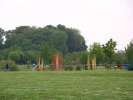
Brie-Comte, un grand parc pas trop loin de Paris, avec un étang et des pêcheurs, des arbres et même un gros bois. Un peu en creux, malheureusement, il faut que le vent veuille bien y descendre... Les pilotables s'installent souvent sur le plateau supérieur, mais c'est hors de vue du public, alors...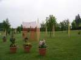
Didier a déjà planté. Son JdV nouveau est en place, à base d'étamines tendues entre des arcs de bambou, soit en positif, soit en négatif laissant une ouverture et une vue perspective, mais sans que la transparence de l'étamine ne bouche la vue de toute façon.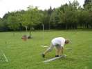
On verra aussi le grand jardin d'éoliennes habituel. Pour l'instant, il n'y a que les pieux et les roulements à bille (de patins à roulettes) mais qui permettront une rotation sans frottement !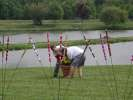
Derrière les massettes colorées de CarnetDeVol, les Tozzo sont en train de voler un pot de fleurs. Mais ça pèse un poids d'enfer, ces trucs là !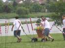
Finalement, ils ont découvert la roue et avec l'aide de quelques bras solides comme ceux de Bernard, ils pourront accomplir leur méfait et rapprocher le pot de leur jardin...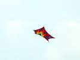
Côté cerfs-volants, vent léger et on commence light mais coloré comme avec ce Jimmy pentagone explosif !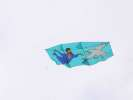
Olivier Reymond est arrivé de Suisse avec encore un nouveau Faga décoré d'un Albatros (merci Olivier !) et d'un capitaine Haddock volant (?) dans l'espace !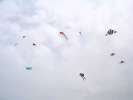
Il finit quand même par y avoir pas mal de monde en l'air, et le festival n'est même pas encore ouvert !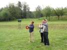
Sylvie et Olivier commentent leurs réalisations respectives, arbitrés par Dédé qui annonce par ailleurs une grande nouvelle...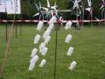
Dans les JdVs, Geneviève a réalisé ce travail de patience à base de timbales découpées !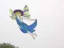
Dans le ciel, un ange passe... rapidement car il est lourd pour ce vent !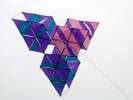
Dédé a transformé son Triangle Impossible pour qu'il soit plus facile à monter et démonter ! Il appelle la nouvelle version "Mitsubishi" pour des raisons évidentes !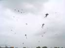
Bon, malgré le temps grisâtre et le vent un peu erratique les cerfs-volants volent, avec des caps assez divers quand même !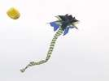
Govert est venu de Hollande et fait voler ce grand diable que j'ai déjà vu, à Somain par exemple, dans des teintes rouges. Un marchand fabriquerait-il ça ?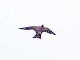
Un oiseau, repris d'un modèle célèbre, mais le propriétaire l'a construit sans copier le plan, seulement sur la base de ses souvenirs...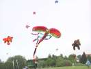
On verra aussi voler quelques secondes cette bête monstrueuse, mais il faut 2 pilotes, un pour chaque flow-form. Peut-être le corps se gonflerait-il mieux si la chose restait plus longtemps en l'air ?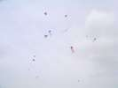
Avec le vent un peu plus fort, je réussirai quand même monter mon Albatros 2 au milieu de tous les autres CVs...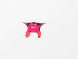
Cette grenouille monstrueuse, elle, n'a pas besoin de beaucoup de vent !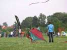
Ce flocon aux couleurs un peu... spéciales volera aussi, malgré sa densité !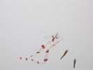
Les faux deltas, avec un seul tube courbe, sont eux, bien adaptés à cette météo grâce à leur légèreté.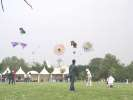
Par contre, les "Facettes", ces grands flocons tout fins ne voleront que quelques secondes, sauf quand leurs créateurs courront vite...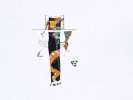
Sylvie a eu un peu de mal à faire voler son grand cerf-volant "droit", les queues ne portent pas beaucoup mais il leur faut une solide armature...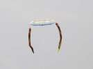
Le "Sky Flyers de Rijen" fait voler ce beau quatre-mâts !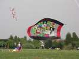
Et Turbulences se met en quatre pour maintenir en vol cette bâche qui doit réunir les réalisations du club...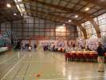
Le samedi soir, dîner dans le gymnase, où nous avions passé toute une journée l'an dernier ! Ce soir, exposition Cassagnes avec évidemment plein de roues...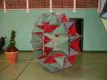
Une "roue" de Cassagnes, mais perpendiculaire, volant sur la tranche...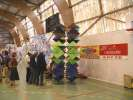
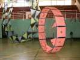
Et une roue "tranche" aussi, mais avec de petites ailettes pour qu'elle tourne en vol ! Le bridage a dû être délicat !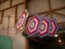
Aussi les célèbres navettes qui se repliaient comme des parapluies en arrivant en haut, ou quand celle qui redescendait télescopait celles qui montaient !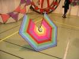
Celle-ci, avec un segment enlevé et une poulie, pouvait fonctionner sans la contrainte d'être enfilée...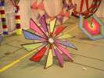
Celle-la avec ses ailettes tournait en montant et se repliait comme les autres... Très spectaculaire !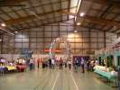
Michel Gressier a monté pour lui rendre hommage sa grande roue de 8 m ! Impressionnant dans le gymnase !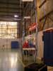
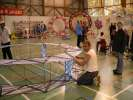
Hugo, qui ne recule devant aucun effort, a aussi monté sa nouvelle roue, très belle...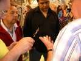
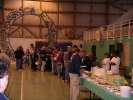
Bon, on a aussi dîné, la soirée n'était pas finie...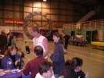
Hugo et Audrey offraient à boire au dessert pour annoncer sans doute un événement important dans leur vie...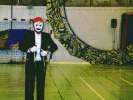
Et Michel Chantren avec son amie en nain de jardin a sorti son numéro de robot qui pilote (superbement) un quatre lignes avant que les piles ne soient mortes !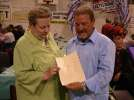
Claude est content que ça marche bien. Il se fait caricaturer par un cervoliste, c'est tout à fait lui !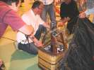
Michel Gressier sort sa grande petite montgolfière. Le plus admirable techniquement, c'est la nacelle où tout est à l'échelle : les brûleurs, les bouteilles de gaz, la coque en osier tressé, tout !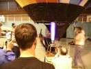
Heureusement, il a le brevet spécial pour faire ça en indoor et devant des spectateurs ! Ouf, parce que ce n'est pas vraiment un jouet d'enfant...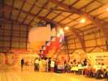
Finalement, ça finit par voler, mais on touche vite le plafond, alors attention !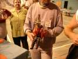
Il a même en réserve une plus petite montgolfière avec une petite nacelle ou plutôt un siège monoplace !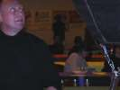
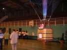
Les anglais profitent du vol pour baptiser leur nounours (vous savez, celui qui fait la sieste dans son transat en buvant de la bière) !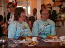
Le lendemain matin, on retrouve les mêmes anglais au petit-déjeuner au Fast Hotel avec des T-shirts splendides racontant leurs réalisations !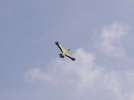
Et les vols reprennent, avec ce fou de Bassan splendide, mais manquant un peu de cambrure et de poids à l'arrière : dès que le vent faiblit, il part en piqué jusqu'au sol...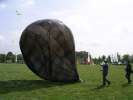
Hélas, le vent n'est pas plus fort qu'hier. Il doit même s'inverser à mi-journée ce qui promet un déjeuner tranquille sans remords ! Un ballon solaire en profite pour se gonfler d'abord...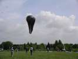
...puis décoller avec aisance, les propriétaires marchant avec pour suivre le vent et éviter qu'il ne se couche. Il montera ainsi jusqu'à bien 50 m et on a même failli faire le lâcher de bonbons avec, mais Bruno a molli et il fallait trouver une navette adaptée, pas facile !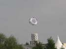